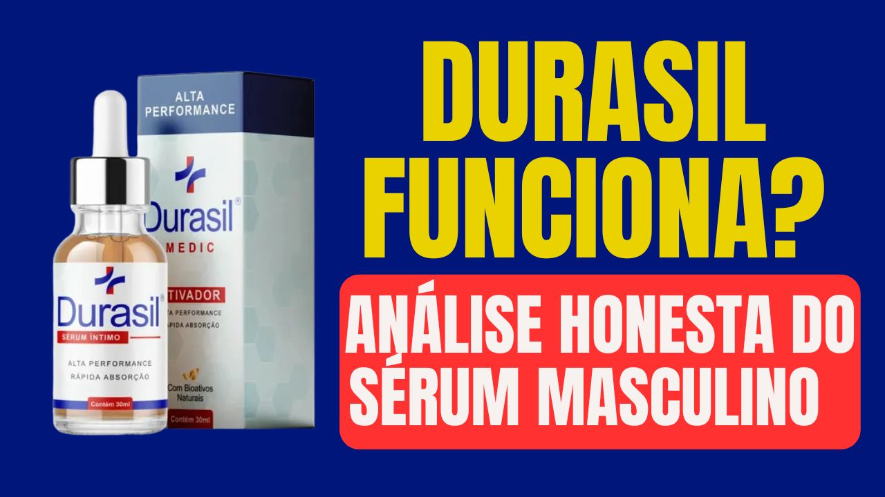

Analisamos os ingredientes, investigamos as reclamações e buscamos onde comprar o original. Sem exagero, sem promessa falsa.
▶ Assista ao resumo em vídeo da nossa análise do Durasil

Acesse o site oficial — ingredientes, kits, preços e garantia de 30 dias.
→ Acessar Site Oficial do Durasil✓ Garantia 30 dias · Frete grátis · Pagamento seguro via Braip
O Durasil Sérum Íntimo Masculino é um suplemento natural desenvolvido para auxiliar na sérum masculino · ejaculação precoce. Disponível exclusivamente pelo site oficial via Braip — sem comercialização em farmácias ou marketplaces.
A fórmula combina ingredientes com respaldo científico, atuando de forma progressiva no organismo. O fabricante recomenda uso contínuo por 2 a 4 meses para resultados consistentes.
Cada ingrediente do Durasil tem função específica e verificável. Abaixo a análise dos principais ativos:
A composição foi desenvolvida com ingredientes naturais sem substâncias controladas. Cada ativo atua em sinergia para potencializar os resultados de forma gradual e segura.
Por ser formulado com ingredientes naturais, o Durasil não apresenta efeitos colaterais relatados quando usado conforme indicado pelo fabricante.
Ingredientes naturais · Garantia 30 dias · Frete grátis · Braip
→ Comprar Durasil no Site Oficial✓ Pagamento seguro · Entrega rastreada · Garantia 30 dias
Conteúdo informativo e independente. Não substitui orientação médica. Resultados podem variar de pessoa para pessoa. Este site contém links de afiliado — se você comprar pelo nosso link, recebemos uma comissão sem custo adicional para você. Consulte um médico antes de iniciar qualquer suplementação.